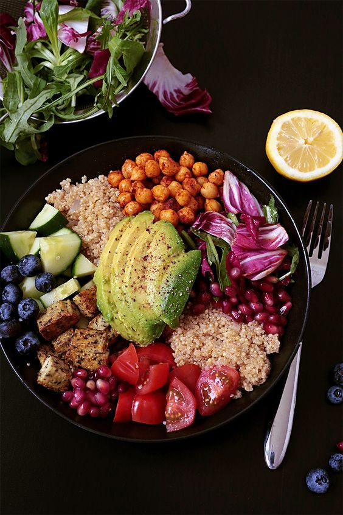
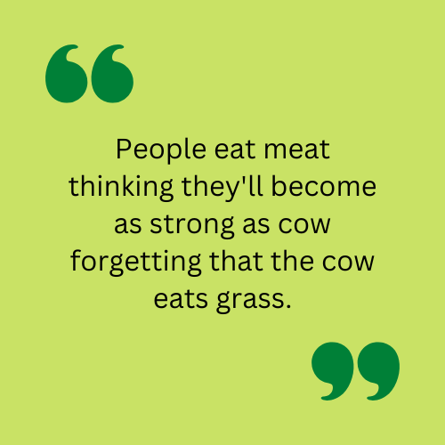
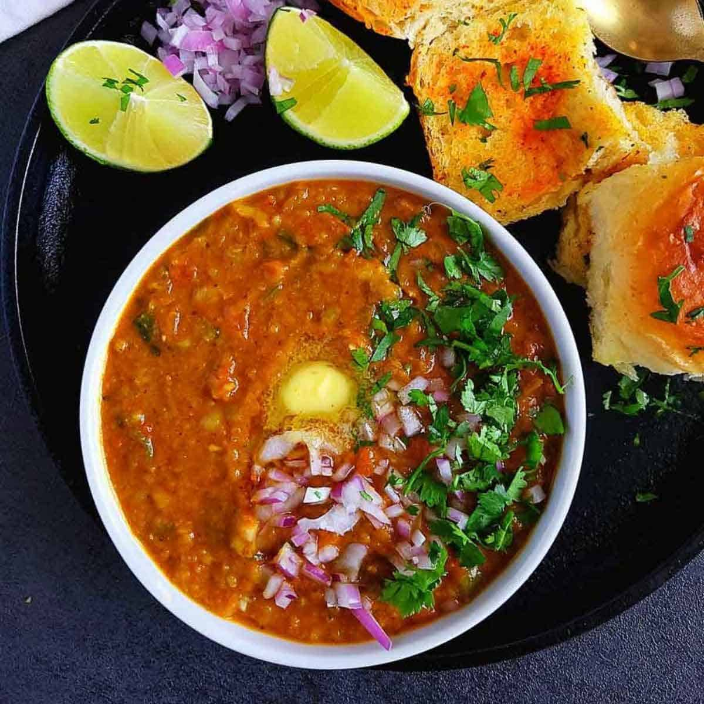
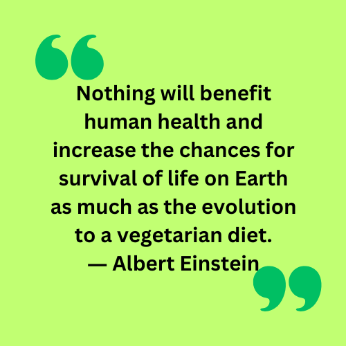

HOME





Different options to enter the journey:
-
Lacto Vegetarianism
You can include dairy products in your plant-based diet but cannot include eggs, poultry, fish, or meat. -
Lacto-Ovo Vegetarianism
You can include eggs and dairy products in your plantbased diet but cannot include poultry, fish, or meat. -
Ovo Vegetarianism
You can include eggs in your plant-based diet but cannot include dairy products, poultry, fish, or meat. -
Pescatarian
You can include fish in your plant-based diet but cannot include dairy products, poultry, egg, or meat. -
Vegan
You cannot include fish, dairy products, poultry, egg, or meat in your plant-based diet.